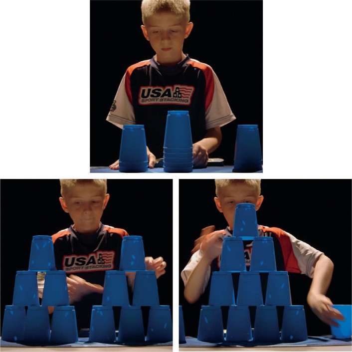
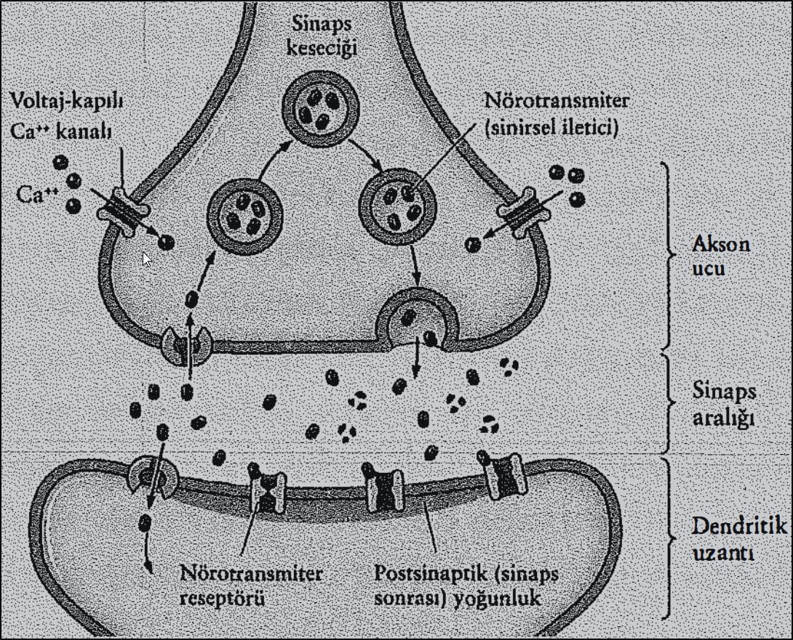

Evrenin boyutlarının, geceleri gökyüzüne bakarak hayal edebileceğimizden çok daha büyük olduğu artık biliniyor. Benzer biçimde kafamızın içindeki evren de, bilinçli deneyimlerimizle belirlenen sınırların çok ötesine kadar uzanıyor. Bu iç uzayın inanılmaz büyüklüğü hakkında yeni yeni fikir sahibi olmaya başladık. Bir arkadaşınızın yüzünü tanımak, araba kullanmak, bir fıkrayı anlamak ya da buzdolabından ne çıkaracağımıza karar vermek, ilk bakışta fazla çaba gerektirmeyen işler gibi görünebilir; ama aslında bunları mümkün kılan tek şey, bilinçli farkındalık yüzeyinin derinlerinde gerçekleştirilen kapsamlı hesaplamalardır. Şu anda, yaşamımızın bütün anlarında olduğu gibi, beyinsel ağlarınız çeşitli etkinliklerle vızır vızır işlemekte, hücreler boyunca koşuşturan milyarlarca elektrik sinyali, nöronlar arasındaki trilyonlarca bağlantı üzerinde kimyasal atımlar oluşturmaktadır. En basit eylemlerin altında bile nöronlarca harekete geçirilen muazzam bir işgücü yatar. Siz bütün bu etkinliklerden bihaber yaşarken, nasıl davrandığınız, önem verdiğiniz şeyler, tepkileriniz, aşklarınız ve tutkularınız, doğru ve yanlış bildikleriniz, yani bütün yaşamınız, aslında yüzeyin altında olup bitenlerle şekillenip renklenmektedir. Deneyimleriniz, bütün bu gizli ağların nihai ürünüdür yalnızca. Peki ama geminin dümeni tam olarak kimde öyleyse?
Sabah vakti. Güneş ufkun üzerinde göz kırprnaya başlarken mahallenizdeki sokaklarda henüz çıt yok. Kentin dört bir köşesindeki yatak odalarında birer birer şaşılası bir olay yaşanmakta: İnsan bilinci yaşama uyanmak üzere. Gezegen üzerindeki en karmaşık nesne, varoluşunun farkına varmaya başlıyor.
Çok kısa bir süre önce siz de derin uykudaydınız. Beyninizdeki biyolojik malzeme o zamandan bu yana değişmedi; az da olsa değişen, etkinlik kalıpları oldu. Şu an bazı deneyimlerin keyfine varıyorsunuz. Gözlerinizin bu sayfada taradığı yamuk yumuk çizgilerden anlamlar çıkarıyorsunuz. Belki teninizde güneşi, saçlarınızda esintiyi hissediyorsunuz. Dilinizin ağzınız içinde aldığı konumu, sol ayakkabınızın ayağınıza verdiği hissi düşünebiliyorsunuz. Uyanıksınız; bu nedenle kimliğinizin, yaşamınızın, ihtiyaçlarınızın, arzularınızın ve planlarınızın farkındasınız. Gün başladığına göre, artık insanlarla ilişkileriniz ve hedefleriniz üzerinde düşünebilir, hareketlerinizi buna göre yönlendirebilirsiniz.
Peki ama, bilinçli farkındalığınız, günlük etkinliklerinizi hangi ölçüde kontrol edebiliyor?
Bu cümleleri nasıl okuduğunuzu ele alalım. Sayfayı tarayan gözlerinizin yaptığı küçük, hızlı zıplama hareketlerinin çoğunlukla farkında değilsinizdir. Gözleriniz sayfa boyunca dümdüz bir çizgi boyunca ilerlemez; onun yerine sabit bir noktadan diğerine atlarlar. Gözler bu zıplama hareketinin ortasındayken, okumanıza izin vermeyecek bir hızla hareket etmektedirler. Metni algılamaları, ancak belli bir konumda durmalarıyla mümkündür; ki, bu da yaklaşık yirmi milisaniye sürer. Bu hoplayıp zıplamaların, durup kalkmaların farkında olmayışınız, beyninizin dış dünyayla ilgili algınızı dengelemek için sarf ettiği büyük çaba sayesindedir.
Okuma eyleminin ilginçliği bununla kalmaz. Bir de şöyle düşünün: Sözcükleri okurken, anlamları, bu semboller dizisinden doğruca beyninize akmaktadır.
Sürecin karmaşıklığı hakkında bir fikir edinmek istiyorsanız, bu bilgileri bir de başka bir dilde okumaya çalışın, yeter:
Eğer Bengalce, Belarusça ya da Korece bilmiyorsanız, bu harfler sizin için tuhaf karalamalardan farksızdır. Ama böyle bir metni okumada bir kez ustalaştığınızda, bu eylemin çaba gerektirmediği izlenimine kapılırsınız: Birtakım işaretlerin şifresini çözmek gibi zahmetli bir işe kalkıştığınızın farkında bile değilsinizdir artık; çünkü beyniniz, sahne arkasındaki işleri sizin adınıza üstlenmiştir.
Öyleyse kontrol kimde? Kendi geminizin kaptanı yine siz misiniz, yoksa karar ve eylemleriniz gözden uzak işleyen devasa nöral düzeneklere mi atfedilmeli? Gündelik yaşantınızın kalitesi, doğru karar verme yetinize mi bağlı, yoksa yoğun nöron ormanları arasında gidip gelen sayısız kimyasal iletinin kesintisiz vızıltısına mı?
Bu bölümde, bilinçli durumunuzun, beynin etkinliklerinin yalnızca çok az bir bölümüne bağlı olduğunu göreceğiz. Çünkü eylemleriniz, inançlarınız ve eğilimleriniz, beyninizin bilinçli erişime tümüyle kapalı ağları tarafından yönlendirilir.
Bir kafede birlikte oturduğumuzu düşünelim. Sohbet ederken, kahvernden bir yudum almak için fincanı yukarı kaldırdığıını fark ediyorsunuz. Bu eylem öylesine sıradan ki, kahvenin bir kısmını yanlışlıkla gömleğimin üzerine dökmediğim sürece, üzerinde konuşmaya bile değmez. Ama hakkını vermek lazım: Fincanı ağıza götürmek aslında hiç de öyle az buz iş değil. Robotik alanında, bu tür bir işin aksamadan yürütülebilmesi için hala büyük çaba sarf ediliyor. Neden mi? Çünkü bu basit eylemin arkasında, eşgüdümleri beynim tarafından titizlikle sağlanan trilyonlarca elektrik atımı var.
İspanyol bilimci Santiago Cajal, fotoğraf konusundaki deneyiminden de yararlanarak, 1887'de beyin dokusu kesitlerine kimyasal boya uygulamaya başladı. Bu teknik, beyindeki hücrelerin, sergiledikleri ihtişamlı dallanmalarla birlikte tek tek görünmelerine olanak tanıyor, beynin eşi benzeri olmayan karmaşık bir sistem olduğu, yavaş yavaş ortaya çıkıyordu.
Mikroskopların seri üretimi ve yeni hücre boyama yöntemlerinin geliştirilmesiyle birlikte, bilim insanları genel hatlarıyla da olsa beynin içerdiği nöronları betimleyebilmeye başladılar. İlginç bir biçim ve boyut çeşitliliği gösteren bu harikulade yapılar, kurdukları ağlantılarla öylesine sık bir orman oluşturmuşlardır ki bu yumağı çözmek bilimcilerin daha onlarca yılını alacak gibi görünmektedir.
Görme sistemim, önümde duran fincanın yerini tam olarak belirleyebilmek için, önce etrafı şöyle bir kolaçan ediyor; yıllara dayanan deneyimlerim ise, başka ortamlarda içmiş olduğum kahvelerle ilgili olarak belleğimi yeniden harekete geçiriyor. Ardından frontal korteks (alın korteksi), sinyalleri motor kortekse gönderiyor. Burası, fincanı kavrayabilmem için gövdem, kolum, önkolum ve elim boyunca devreye girecek kasların kasılmasını çok ayrıntılı biçimde koordine eden bölge. Fincana dokunduğumda, fincanın ağırlığı, uzaydaki konumu, sıcaklığı, kulpunun kayganlığı vb. hakkında tonlarca bilgi, sinirler aracılığıyla beyne iletiliyor. Bu bilgi omurilikten beyne doğru aktıkça, tamamlayıcı bilgiler de yeniden aşağı taşınıyor ve böylece çift yönlü bir yolda hızla akan trafiğe benzer bir düzenek işler hale geliyor. Aşağı taşınan bilginin ortaya çıkışı, "bazal gangliyonlar", "beyincik", "genel duyu korteksi" gibi isimler alan birçok beyin bölgesi arasındaki karmaşık dansın bir sonucu. Fincanı kaldırırken kullandığım kuvvet ve fincanı kavrayış kuvvetim üzerinde yapılan ayarlamalar için geçen süre, saniyenin kesirleri ölçeğinde. Yoğun hesaplamalar ve geri bildirimler sonucunda, uzun bir kavis çizerek fincanı sarsmadan ve açısını bozmadan yukarı doğru kaldırabilmek için, kaslarımda ayarlamalar yapıyorum. Bu mikro-ölçekli ayarlamalar bütün yol boyunca devam ediyor. Dudaklarıma iyice yaklaşan fincana, şimdi biraz eğim verebilirim; kendimi başlamadan içinden bir miktar sıvı çekebileceğim kadar.
Böyle bir işin üstesinden gelecek bilgisayımsal gücü sağlamak, dünyanın en hızlı bilgisayarlarından düzinelercesini gerektirir. Oysa ben, beynimin içindeki bu elektrik fırtınasını algılamıyorum bile. Nöral ağlarım etkinlikle çığlık çığlığa bağırırken, bilinçli farkındalığım bana bambaşka bir deneyim sunuyor. Her şeyden tümüyle bihaber gibiyim. Bilinçli ben, kendini tümüyle sohbete kaptırmış durumda. Hem de öyle kaptırmış ki, bir yandan fincanı kaldırıp bir yandan da karmaşık bir konu üzerindeki fikirlerimi sunarken, ağzım aracılığıyla hava akışını bile biçimlendiriyor olabilirim.
Bildiğim tek şey, kahveyi ağzıma götürmeyi başarıp başaramadığım. Her şey pürüzsüz ilerlediği sürece, böyle bir eylemde bulunmuş olduğumun bile farkına varamayabilirim.
Beynin bilinçdışı çalışan düzeneği her an işbaşındadır; ama öylesine pürüzsüz bir işleyiş sergiler ki, gerçekleştirdiği işlemlerin genellikle farkına varmayız bile. Sonuçta bu düzeneğin değeri de en çok çalışmadığı zamanlarda takdir edilir. Kanıksamış olduğumuz basit eylemleri, örneğin bize dolambaçsız gibi görünen yürüme hareketini bilinçli olarak düşünmek zorunda kalsaydık nasıl olurdu sizce? Bu sorunun yanıtını almak için Ian Waterman adındaki bir şahısla görüşmeye gittim.
Ian, on dokuz yaşındayken geçirdiği şiddetli bir mide-bağırsak iltihaplanmasının sonucu olarak, ender görülen bir sinirsel hastalığa yakalanmıştı. Dokunma ve bunun yanında kol ve bacakların konumuyla (bu tür konumsal duyular "derin duyu" ya da "propriyosepsiyon" olarak adlandırılır) ilgili olarak beyne bilgi gönderen duyu sinirleri artık işlevsizdi. Ian, bu nedenle hiçbir vücut hareketini otomatik olarak idare edememekteydi. Kaslarında herhangi bir sorun olmadığı halde, doktorlar ona kalan ömrü boyunca tekerlekli sandalyeye mahkum olduğunu söylemişlerdi. Vücudunun konumunu bilmeyen bir insan, yaşamını normal biçimde sürdüremez. Üzerinde nadiren düşünüp değerini nadiren fark etsek de, günün her anında yaptığımız karmaşık hareketler, hem çevreden hem de kaslarımızdan gelen geribildirimler sayesindedir.
Gözleriniz kapalıyken bile, kol ve bacaklarınızın nerede olduğunu bilirsiniz: Sol kolunuz mı aşağıda mır Bacaklarınız düz mü kıvrık mı? Sırtınız dik mi kambur mu oturuyorsunuz? Kaslarınızın durumunu bilmenizi sağlayan duyu,"derin duyu" da "propriyosepsiyon" olarak bilinir. Kas, kiriş (tendon) ve eklemlerdeki reseptörler, eklem açıları kadar, kasların gerginlik ve uzunlukları hakkında da bilgi toplarlar. Bu bilgiler bir bütün olarak, beyne vücudun konumuyla ilgili ayrıntılı bir tablo sunar ve hızlı ayarlamalar yapılmasını mümkün kılar.
Bacaklarınızdan biri uyuştuktan sonra yürümeye kalkıştıysanız, derin duyu algınızın geçici olarak aksadığına kendiniz de tanık olmuşsunuz demektir. Bu tür deneyimlerde duyu sinirlerinin maruz kaldığı basınç, ilgili duyuların gönderilip alınmasını engeller. Kendi kol ya da bacağınızın konumunu hissedemediğinizde, yiyecek doğramak, klavyeyle yazmak ya da yürümek gibi basit eylemler bile neredeyse olanaksız hale gelir.
Ian, bu durumun kendisini hareketsiz bir yaşama mahkum etmesine izin vermeyecekti. Ve harekete geçti gerçekten de. Ancak uyanık olduğu bütün saatler boyunca, vücudunun her bir hareketini bilinçli olarak düşünmesi gerekiyor artık. Kol-hacak konumuyla ilgili herhangi bir duyuya sahip olmadığından, vücudunu odaklı ve bilinçli bir kararlılıkla hareket ettirmek zorunda. Kol ve bacaklarının konumunu izlemek için görme sisteminden yararlanıyor. Yürürken, bacaklarını olabildiğince iyi bir biçimde görebilmek için başını öne eğiyor. Dengesini korumak için ise, duyu eksikliğini kollarını arkaya uzatarak telafi etmeye çalışıyor. Ian ayaklarıyla yeri hissedemediğinden, attığı adımların tam uzunluğunu önceden kestirmesi, ayağını yere basarken de hacağını kırmaması gerekiyor. Attığı her adım, bilinçli bir zihinle hesaplanıyor ve düzenleniyor.
Otomatik yürüme yetisini kaybetmiş olan Ian, yürüyüş yaparken çoğumuzun kanıksayarak görmezden geldiği mucizevi eşgüdüm becerisinin son derece farkında. Ona sorarsanız, çevresindeki herkes öylesine seri biçimde, öylesine kayar gibi yürüyor ki, bu süreci onlar için yönlendiren inanılmaz sistemin farkında bile değiller.
Bir anlık bir dalgınlık, kafasında beliriveren tek bir alakasız düşünce, Ian'ın düşmesi için yeterli. Dikkat dağıtıcı bütün unsurlar bir kenara atılmalı ki, en küçük ayrıntıya bile yoğunlaşabilsin: yerin eğimine, bacağının savruluşuna.
Ian ile yalnızca bir iki dakika vakit geçirmeniz, üzerinde düşünmeye bile değer bulmadığımız günlük eylemlerin (yataktan kalkmak, kapıyı açmak, biriyle el sıkışmak için kolunuzu uzatmak) inanılmaz karmaşıklığına ışık tutmaya yetecektir. Verdikleri ilk izlenimin aksine, bu tür hareketler aslında hiç de basit değildir. Bu nedenle yürüyen, koşan, kaykay yapan ya da bisiklete binen birini bir sonraki görüşünüzde, bir anlığına durun ve yalnızca insan vücudunun müthiş yapısını değil, bu yapıyı kusursuz biçimde idare edip düzenleyen bilinçdışı beynin gücünü de getirin aklınıza. En temel hareketletimizde bile devreye giren çetrefilli ayrıntılar, göremeyeceğimiz kadar küçük ölçekte ve kavrayışımızın çok ötesindeki bir karmaşıklık düzeyinde vızıldayıp duran trilyonlarca hesaplamayla hayat bulur. Yaptığımız robotlar henüz insan performansının kıyısına bile varamamıştır. Bir süper-bilgisayarın gerektirdiği muazzam enerji tüketimine karşılık, insan beyni inanılmaz bir enerji verimliliğiyle çalışır. Kullandığı enerji, 60 vatlık bir ampulün kullandığı enerjiden fazla değildir.
Nörobilimciler, beyin işlevleriyle ilgili ipuçlarına ulaşmak için genellikle belirli bir alanda uzmanlaşmış insanları inceleme yoluna giderler. Ben de, sıra dışı bir yeteneğe sahip on yaşındaki bir çocuk olan Austin Naber'la görüşmeye aynı nedenle gittim. Austin, kap dizme olarak bilinen bir sporda çocuklar dünya rekorunu elinde tutuyor.
Austin, gözle takip etmesi olanaksız hızlı ve seri hareketlerle, bir kap sütununu üç farklı piramitten oluşmuş bir simetri gösterisine dönüştürüyor. Piramitler, daha sonra yine müthiş bir el çabukluğuyla iç içe geçmiş kaplardan oluşan iki kısa sütuna, derken tek bir uzun piramide, ve sonra yeniden başlangıçtaki kap sütununa dönüşüyor.
Bütün bu işlemlerin aldığı süre, beş saniye. Aynı şeyi kendim de denediğimde, ulaşabildiğim en kısa süre, kırk üç saniye olmuştu.
EEG kısaltmasıyla bilinen elektroensefalogram, nöron faaliyetleri sonucunda ortaya çıkan genel elektriksel etkinliğe kulak misafıri olmak için kullanılan bir yöntemdir. Bu yöntem, başın yüzeyine yerleştirilen elektrotların, "beyin dalgalarını" algılamasına dayanır. "Beyin dalgaları" terimi ise, incelikli nöral etkinliklerle üretilen elektrik sinyallerinin ortalamaya dökülmüş durumunu ifade eden, genel bir kavramdır.
Alman fizyolog ve psikiyatrist Hans Berger, insana ait ilk EEG kaydını 1924'te almış, 1930'lar ve 1940'ların araştırmacıları ise birbirinden farklı birkaç beyin dalgası tipi belirlemişlerdir: Delta dalgaları (4 Hz'lik frekansın altında) uyku sırasında ortaya çıkar; Teta dalgaları (4-7 Hz) uyku, derin dinlenme ve görselleştirmeyle ilgilidir; Alfa dalgaları (8- 13 Hz) rahat ve sakinken beliren dalgalardır; Beta dalgaları ( 13-38 Hz) da etkin biçimde düşünürken ve problem çözerken görülür. O zamandan bu yana, önemli başka beyin dalgası aralıkları da ortaya çıkmıştır. Bunlardan Gama dalgaları (39- 100 Hz) akıl yürütme ve planlama gibi yoğunlaşmış zihinsel etkinliklerle ilgilidir.
Genel beyin etkinliğimiz, bütün bu farklı frekansların bir karışımıyla temsil edilir; ancak yapmakta olduğumuz şeye bağlı olarak, bunlardan bir kısmı diğerlerinden daha fazla sergilenecektir.
Austin'i işbaşındayken seyrettiğinizde, bu karmaşik hareketleri böylesine hızlı biçimde koordine edip gerçekleştirebilmesi için beyninin aşırı çalışıp muazzam bir enerji harcadığı izlenimine kapılabilirsiniz. Bu izlenimi sınamak için, giriştiğimiz bir kap dizme yarışında Austin'in beyin etkinliklerini (ve tabii benimkileri de) ölçmeye karar verdim. Araştırmacı Dr. Jose Luis Contreras-Vidal'ın da yardımıyla taktığımız elektrot başlıkları, kafatasının derinliklerinde yer alan nöron popülasyonlarının etkinliklerini ölçmeye yarayacaktı. Elektroensefalogram (EEG) ile ölçülen beyin dalgaları her ikimiz için de okunacak ve böylece etkinlik sırasında beyinlerimizin harcadığı çaba karşılaştırılabilecekti. Bu donanım sayesinde Austin ve ben derme çatma da olsa, artık kafamızın içindeki dünyaya açılan bir pencereye sahiptik.
Austin bana hareketler dizisini adım adım gösterdi. On yaşında bir çocuk tarafından fazlasıyla acı bir yenilgiye uğratılmamak için, yarış resmen başlamadan önce yirmi dakika kadar arka arkaya birçok deneme yaptım.
Sonunda, bütün bu çabalarıının yararsız olduğu ortaya çıkacaktı. Austin beni yendi. Kapları büyük bir zafer edasıyla nihai konurolarına getirdiğinde, adımların sekizde birini bile tamamlamamıştım.
Bu, beklenmedik bir yenilgi değildi elbette. Ama EEG ölçümleri ne diyordu bu sonuç hakkında? Benden sekiz kat hızlı sonuç aldığına göre, Austin'in benden sekiz kat fazla enerji harcamış olması, akla yakın bir varsayım. Ama bu varsayım, beynin yeni bir beceriyi nasıl edindiğiyle ilgili temel bir kuralı göz ardı eder. Sonuçta EEG ölçümleri gösterdi ki, fazla çalışan ve bu karmaşık yeni görevi yürütmek için muazzam miktarda enerji harcayan beyin Austin'inki değil, benimkiydi. Bana ait olan EEG, kapsamlı problem çözmeyle ilişkili Beta dalgası frekans bandında yüksek etkinlik gösteriyordu. Austin' de belirlenen yüksek etkinlik ise, dinlenme halindeki beyni temsil eden Alfa dalgası bandındaydı. Hareketlerindeki hız ve karmaşıklığa rağmen, Austin'in beyni oldukça sakin ve dingindi.
Austin'in bu işte sergilediği yetenek ve hız, beynindeki fiziksel değişimlerin bir sonucuydu. Alıştırmalar yaptığı yıllar boyunca, belirli fiziksel bağlantı kalıpları ortaya çıkmış, kap dizme becerisi nöronların yapısına kazınmıştı. Austin, bunun sonucunda bugün kap dizmek için çok daha az enerji harcıyor. Benim beynim ise aksine, soruna bilinçli bir kafa yarma süreciyle eğiliyor. Ben genel-amaçlı bilişsel yazılımlardan yararlanırken, Austin de becerisini bilişsel donanıma aktarmış durumda.
Üzerinde alıştırmalar yaptığımız yeni beceriler, sonunda fiziksel olarak beyin devrelerine kazınır ve bilinç düzeyinin derinlerine yerleşirler. Kimileri bu özelliği "kas belleği" olarak adiandırma eğilimindeyse de, beceriler kaslarda depolanmaz. Onun yerine, sözgelimi kap dizme işine benzer türden "alışkanlıklar"ın düzenlenip yürütülme işi, Austin'in beyninde olduğu gibi, bağlantılardan oluşmuş o sık ormanın bünyesinde gerçekleşir.
Austin'in beynindeki ağların ayrıntılı yapısı, yıllar boyu yaptığı kap dizme alıştırmaları sonunda değişmişti. İşlemsel (prosedürel) bellek, bisiklete binmek ya da ayakkabı bağcığı bağlamak gibi otomatik eylemlerde devreye giren uzun-dönemli bir bellek tipidir. Austin de kap dizme işini, beyninin mikroskobik donanımına işlenen işlemsel bellekle gerçekleştiriyor ve böylece hareketleri hem hızlı hem de enerji bakımından verimli oluyordu. Alıştırmalarla tekrarlanan sinyaller nöral ağlar boyunca ilerleyerek sinapsları güçlendirmiş ve bu beceriyi devrelere "kazımıştı". Hatta beyni öyle ustalaşmıştı ki, Austin kap dizme rutinini gözleri bağlıyken de hatasız biçimde yürütebiliyordu.
Bana gelince, kapları üst üste dizmeyi öğrendikçe beynim prefrontal korteks (ön-alın korteksi), parietal (yan) korteks ve beyincik gibi görece ağır işleyen, enerjiye aç bölgeleri devreye sokuyordu. Aynı işlemi gerçekleştirmek için Austin'in artık bu bölgelere ihtiyacı kalmamıştı. Yeni bir motor beceri öğrenmeye başladığınızın ilk günlerinde beyincik özellikle önemli bir rol üstlenerek, kesinlik ve kusursuz zamanlama için gerekli hareket akışının eşgüdümünü sağlar.
Beceri devrelere kazındıkça, bilinçli denetim düzeyinin derinlerine inmeye de başlar. Bu noktada, o işi otomatik biçimde ve üzerinde düşünmeden (yani bilinçli farkındalık olmaksızın) yerine getirebiliriz. Bazı durumlarda, bir beceri devrelerle artık o kadar bütünleşik hale gelmiştir ki, altında yatan devreler sistemi beynin de altında, omurilikte yer alır. Bu durum, beyinlerinin önemli bölümü alındığı halde koşu çarkında normal biçimde yürüyebilen kedilerde gözlenmiştir: Yürümeyle ilgili karmaşık programlar, sinir sisteminin daha alt düzeylerinde saklanmaktadır.
Beynimiz bütün yaşamımız boyunca kendini yeniden yazarak, alıştırmasını yaptığımız uygulamalar (yürümek, sörf yapmak, havada top çevirmek, yüzmek, araba kullanmak gibi) için adanmış devreler kurmaya çalışır. Bu programları yapısına yedirme becerisi, beynin en güçlü numaralarından biridir. Karmaşık hareket sorununu çözmede kullandığı yöntem, bu harekete adanmış devreleri donanımla bütünleştirerek enerji kullanımını asgariye indirmektir. Beynin devrelerine bir kez kazınan bu beceriler, artık siz onlar üzerinde düşünmeden -yani bilinçli bir çaba göstermeden- uygulamaya geçebilir; bu da kaynakları serbest bırakarak bilincin başka işlerle ilgilenip onları içselleştirmesine olanak tanır.
Bu otomatikleştirme sürecinin bir sonucu da, yeni becerilerin bilincin erişimi dışında kalmalarıdır. Kapalı kapılar ardında işleyen karmaşık programlara artık ulaşamadığınızdan, yaptığınız işi nasıl yaptığınız hakkında kesin bilgiye sahip değilsinizdir. Bir yandan konuşup bir yandan da merdivenleri çıktığınızda, vücudunuzun dengesini korumak için yapılan düzinelerce mikro-ölçekli düzenlemeyi nasıl hesapladığınız; ya da konuştuğunuz dilin seslerini doğru biçimde çıkarmak için dilinizin oradan oraya nasıl döndüğü konusunda herhangi bir fikriniz yoktur. Bunlar, bir zamanlar yapamadığınız zor hareketlerdir. Ama hareketlerinizin zamanla otomatik ve bilinçsiz hale gelmesi, sizin de bir süre sonra işleri otomatik pilotla yürütme becerisi kazanınanızı sağlar. Her zaman gittiğimiz yolda araba kullanıp eve vardığımızda, yolculukla ilgili pek de bir şey hatırlamadığımızı birden fark etmek, çoğumuzun başına gelmiş bir durumdur. Çünkü, araba kullanmanın gerektirdiği beceriler artık öyle otomatik hale gelmiştir ki, devreye giren hareketler dizisini bilinciniz dışında da yürütebilmektesinizdir. Bilinçli "siz", yani sabah kalktığınızda yaşama uyanan parçanız, artık sürücü değil, en iyi ihtimalle yanınıza aldığınız bir yolcudur.
Otomatikleşmiş becerilerin ilginç bir özelliği daha vardır: Onlara bilinçli olarak müdahale etmeye kalkıştığınızda, performans genellikle düşer. Öğrenilmiş becerileri -çok karmaşık olanlarını bile- kendi haline bırakmak en iyisidir.
Kaya tırmanışçısı Dean Potter'ı ele alalım: Hayatını kaybettiği son kazaya kadar, tırmanırken ne ip ne de herhangi bir güvenlik donanımından yararlanmıştı. On iki yaşından itibaren hayatını tırmanmaya adamıştı Dean. Kesinlik ve beceri, yıllar süren çalışmalarla beynine işlenmişti. Hedeflediği yeterliğe ulaşmak için, bu aşırı antrenmanlı devrelere güveniyor ve bilinçli düşüncenin engellerine takılmalarına izin vermeksizin, işi onlara bırakıyordu. Bütün kontrolü bilinçdışına devretmişti. Tırmandığı sırada, beyni genellikle "akış" olarak adlandırılan ve ekstrem sporlarla uğraşan çoğu sporcunun, becerilerinin üst sınırlarında dalaşmanın zevkine vardıkları bir evreye giriyordu. Ve birçok sporcu gibi Dean de, yaşamını tehlikeye atarak ulaşıyordu bu akış durumuna. Beyni bu evrede çalışırken, iç sesinin müdahalesiyle karşılaşmıyor, Dean de kendisini tümüyle, yıllar sürmüş antrenmanların beynine kazıdığı tırmanma becerisine bırakıyordu.
Nöronlar arasındaki bağlantılara "sinaps" adı verilir. Bu bağlantı bölgelerinde "nörotransmiter" ya da "sinirsel iletici" olarak bilinen kimyasallar; sinyalleri bir nörondan diğerine iletirler. Ancak, sinaptik bağlantıların tümü aynı güçte değildir; etkinlik geçmişlerine bağlı olarak güçlenebilir ya da zayıflayabilirler. Sinapsların gücü değiştikçe, bilgiler ağ içinde farklı biçimlerde akar. Yeterli ölçüde zayıflayan bir bağlantı sonunda yitip gidecektir; ama eğer güçlenirse de ondan yeni bağlantılar filizlenecektir. Bu yeniden yapılanma süreçlerinin bir kısmı, ödül sistemlerince yönlendirilir. Bunlar işler iyi gittiğinde dopamin adlı sinirsel ileticiyi ağ boyunca yayarlar. Austin'in beynindeki ağlar da, yüzlerce saat süren alıştırma süreci içinde girişilen her hareketin başarı ya da başarısızlığa bağlı olarak -çok yavaş ve çok incelikli bir biçimde- yeniden biçimlenmiştir. 
Kap dizme şampiyonu Austin Naber'da olduğu gibi, akış durumundaki bir sporcunun beyin dalgaları da, bilinçli müdahalenin gürültüsüyle bozulmaya uğramaz. (Nasıl görünüyorum acaba? Şöyle şöyle mi deseydim? Kapıyı arkamdan kilitledim mi? ) Beyin, akış sırasında "hipofrontalite" adı verilen ve prefrontal korteksin bazı alanlarındaki etkinliğin geçici olarak düştüğü bir duruma girer. Bunlar soyut düşünme, plan yapma ve kişinin kendi benlik duyusuna yoğunlaşmasında devreye giren alanlardır. Arka planda çalışan bu işlemlerin sönümlendirilmesi, bir insanın dik bir kayalıktan aşağı sarkmasını mümkün kılan ana etkendir. Dean'in başarmış olduğu işleri yapmak ise, yalnızca iç seslerin gürültüsünün bastırılmasıyla mümkündür.
Bilincin bir kenara çekilmesinin avantajlı olduğu birçok durum vardır. Özellikle bazı türden eylemler söz konusu olduğunda başka çare de yoktur zaten; çünkü bilinçdışı beyin, bilinçli zihnin yetişemeyeceği hızlarda çalışabilir. Beyzbol oyununu düşünün. Top, düz atış yapıldığında, atıcın bulunduğu bölgeden sayı kalesine saatte yüz altmış kilometre hızla ilerleyebilir. Topa vurabilmek için beynin yalnızca saniyenin onda dördü içinde tepki vermesi gerekir. Beyin bu süre içinde bir dizi incelikti hareketi düzenleyip işlemlemek zorundadır. Vurucular çoğunlukla topa vurmayı başarsalar da, bunu bilinçli olarak yapmazlar; çünkü top, konumunun farkına bilinçli olarak varamayacakları kadar hızlı hareket etmektedir. Topun konumunu bilinçli olarak düşünmeye kalktıklarında, ne olduğunu anlamadan vuruşu kaçıracaklardır. Bilinç, bu durumda kenarda beklemekle kalmaz, toza dumana karışıp gider.
Bilinçdışı zihin, vücudumuzun kontrol alanının erimi dışına uzanır ve yaşamımızı çok derinden etkiler. Biriyle bir daha sohbete tutuştuğunuzda, sözcüklerin ağzınızdan dökülme hızına dikkat edin. Bilincinizin bu hıza yetişip ağzınızdan çıkan her sözcüğü tek tek denetlemesi olanaksızdır. Ama beyniniz yine sahne arkasında çalışarak konuşmakta olduğunuz dili, fiil çekimlerini ve karmaşık düşünceleri sizin adınıza biçimlendirip üretmektedir. (Bu durumu daha iyi anlamak için, yeni öğrenmekte olduğunuz bir yabancı dili konuşmaya çalışırken sergilediğiniz hızı bir düşünün!)
Aynı perde arkası işleyiş, fikirler için de geçerlidir. Bütün fikirlerimizi bilinçli olarak kendimize mal ederiz; ortaya çıkışlarında işin zor kısmını kendimiz yapmışız gibi. Ama gerçekte bilinçdışı beynimiz, biz fikrin farkına bilinçli olarak varıp "aklıma bir fikir geldi" beyanında bulunmadan saatler, hatta aylar öncesinden çalışmaya başlamış, anılarımızı pekiştirmek, yeni bileşimler bulmak, sonuçları değerlendirmek için didinip durmuştur.
Bilinçdışının gizli derinliklerini aydınlatmaya başlayan ilk kişi, yirminci yüzyılın en etkili bilimcilerinden biriydi. Sigmund Freud 1873'te Viyana'da tıp okumaya başlamış, daha sonra nöroloji alanında uzmanlaşmıştı. Psikolojik bozuklukların tedavisi için açtığı özel klinikte, hastalarının, çoğunlukla davranışlarının altında yatan etken hakkında herhangi bir fikir sahibi olmadıklarını fark eden Freud, bu davranışların göze görünmeyen zihinsel süreçlerin birer ürünü olabileceğini öngördü. Bu basit fikir, psikiyatriyi dönüşüme uğratarak insan güdü ve duygularıyla ilgili yeni bir anlayış getirdi.
Freud'dan önce, normalden sapan zihinsel süreçler ya anlaşılamadan kalır ya da şeytan çarpması, zayıf irade gibi durumlarla açıklanırdı. Freud ise, nedeni beynin fiziksel yapısında aramakta ısrarlıydı.
Hastalarını, kendisini doğrudan görmek zorunda kalmamaları için kliniğindeki bir kanepeye yatırır, sonra da konuşmalarını sağlardı Freud. Beyin tarama tekniklerinin henüz bulunmadığı bu dönemde, bilinçdışı beynin dünyasına göz atmanın en iyi yolu buydu. Freud'un yöntemi; davranış kalıpları, rüya içerikleri, dil ve kalem sürçmelerinden yola çıkarak bilgi toplamaktı. İncelemelerini bir dedektif hassaslığıyla yapıyor, hastanın doğrudan erişemediği bilinçdışı nöral düzenek hakkında ipuçları toplamaya çalışıyordu.
Freud bilinçli zihnin, bir zihinsel süreçler buzdağının yalnızca görünen kısmı olduğu sonucuna vardı. Düşünce ve davranışlarımızı yönlendiren bütünün büyük bölümü ise gözlerden uzaktı.
Freud'un bu düşüncesinin doğru olduğunu artık biliyoruz. Bunun sonuçlarından biri de, kendi seçimlerimizin altta yatan nedenlerinin çoğunlukla farkında olmayışımızdır. Beynimiz çevreden sürekli olarak bilgi toplar ve bu bilgiyi de davranışlarımızı yönlendirmede kullanır; ancak çevremizdeki etkenlerin farkında değilizdir çoğu zaman. "Hazırlama" (priming) adı verilen ve bir şeyin, başka bir şeyle ilgili algıyı etkileyebildiği durumu ele alalım. Örnek verecek olursak, elinizde sıcak bir içecek olduğunda, bir aile bireyiyle olan ilişkinizi anlatırken daha olumlu; soğuk bir içecek olduğunda da belki biraz daha olumsuz bir tavır takınabilirsiniz.
Bunun nedeni nedir? Nedeni, ilişkilerdeki sıcaklığı değerlendirmede devreye giren mekanizmaların, fiziksel sıcaklığı değerlendirmede devreye giren mekanizmalarla çakışması ve buna bağlı olarak birinin diğerini etkileyebilmesidir. Sonuçta, annenizle olan ilişkiniz gibi temel bir konu üzerindeki görüşleriniz, çayınızı sıcak mı yoksa buzlu mu içtiğinize bağlı olarak yön değiştirebilir. Benzer biçimde, kötü kokulu bir ortamdayken, daha katı ahlaki yargılarda bulunur; sözgelimi, bir başka kişinin sıradan olmayan davranışlarını ahlak dışı olarak değerlendirebilirsiniz. Bir çalışmada, insanların sert bir sandalyede otururken daha sıkı pazarlık edebildikleri, yumuşak bir sandalyede ise teslim olmaya daha yatkın oldukları gösterilmiştir.
Bir başka örnek olarak, bize kendimizi hatırlatan şeyleri çekici bulmamızı açıklayan " örtülü benlikçilik" (implicit egotism) olgusunun bilinçdışı etkisini ele alalım. Sosyal psikoloji uzmanı Brett Pelham ve ekibi diş hekimliği ve hukuk mezunlarının kayıtlarını incelediklerinde ilginç bir sonuçla karşılaşmışlardı: Dennis ya da Denise isimli diş hekimleri [İng. "dentist"], ve Laura ya da Laurence isimli avukatlar [İng. "lawyer"] istatistiksel olarak daha büyük oranda temsil edilmekteydiler. Bunun da ötesinde, çatı kaplama [İng. "roofing"] şirketi sahiplerinin isimlerinin R, hırdavat [İng. "hardware"] dükkanı sahiplerinin isimlerinin de H ile başlaması daha olasıydı. Ama bu tür kararları verdiğimiz tek alan meslek seçimi midir? Öyle anlaşılıyor ki, aşk hayatlarımız da bu tür benzeriikierin epeyce etkisi altındadır. Psikolog John Jones ve meslektaşları ABD'nin Georgia ve Florida eyaletlerindeki evlilik kayıtlarına baktıklarında, isimleri aynı harfle başlayan evli çifderin beklenenden daha fazla olduğunu bulmuşlardır. Buna göre Jenny'nin Joel, Alex'in Amy, Donny'nin de Daisy ile evlenme olasılığı görece fazladır. Bu tür bilinçdışı etkiler küçük olsa da, bunları doğrulamak mümkündür.
Buradaki kritik nokta şudur: Dennis'ler, Laura'lar ya da Jenny'lerden herhangi birine meslek ya da eş seçimini neden bu yönde yaptıklarını soracak olsanız, sizlere anlatacak bilinçli bir hikayeleri olacaktır. Ama hayatlarının belki de en önemli seçimlerine kadar uzanan bilinçdışı zihinleri, bu hikayede yer almayacaktır.
Psikolog Eckhard Hess'in 1965'te tasarladığı başka bir deneyi ele alalım. Deneye katılan erkeklerden, kadın yüzlerini gösteren fotoğraflara bakmaları ve bunları değerlendirmeleri istenmişti: Birden ona kadar olan bir ölçeğe göre, ne kadar çekiciydiler? Kadınlar mutlu muydu, yoksa umutsuz mu? Acımasız mı, nazik mi? Cana yakın mı, soğuk mu? Katılımcıların bilmediği şey, fotoğraflarla oynanmış olmasıydı. Fotoğrafların yarısında, kadınların göz bebekleri yapay yolla büyütülmüştü.
Richard Thaler ve Cass Sunstein, Dürtme (Nudge) başlıklı kitaplarında "sağlık, para ve mutluluğa ilişkin kararlarda" gelişme kaydetmek için beynin bilinçdışı ağlarını hedefleyen bir yaklaşımdan bahsederler. Buna göre ortamdaki ufak çaplı "dürtmeler", biz farkında olmasak da davranış ve kararlarımızda olumlu değişimlere neden olabilir. Süpermarketlerde meyvelerin göz hizasına yerleştirilmesi, insanları gıda seçimlerini daha sağlıklı yönde yapmaları için dürter. Havaalanı tuvaletlerindeki pisuvarlara yapıştırılan bir sinek resmi, erkekleri daha iyi nişan almak yönünde dürter. Çalışanları otomatik olarak emeklilik planlarına yönlendirmek (istendiğinde çıkmak üzere) daha iyi tasarruf uygulamalarına yol açar. Bu idare anlayışı, "yumuşak paternalizm" adını alır. Thaler ve Sunstein'a göre, bilinçdışı beyni yumuşak biçimde yönlendirmek, doğrudan zorlamayla kıyaslandığında karar verme süreci üzerinde çok daha güçlü bir etki gösterir.
Katılımcılar, göz bebekleri genişlemiş kadınları daha çekiçi buldular. Hiçbiri, göz bebeklerinin boyutları hakkında açık bir yorumda bulunmamıştı; hatta muhtemelen hiçbiri, büyümüş göz bebeklerinin kadınlarda cinsel uyarılmanın biyolojik bir işareti olduğunu da bilmiyordu. Beyinleri biliyordu ama. Deneydeki erkekler, bilinçdışının etkisiyle göz bebekleri büyümüş kadınlara yönlenmiş, onları ayrıca daha güzel, daha mutlu, daha nazik ve daha cana yakın bulmuşlardı.
Aslına bakılırsa, aşkın izlediği yol da çoğunlukla budur. Kendinizi bazı insanlardan daha fazla hoşlanır bulursunuz, ama bunun kesin nedeni üzerine parmağınızı basamazsınız genellikle. Bir neden vardır ama tahminen; ona erişiminiz yoktur, o kadar.
Bir başka deneyde ise, evrimsel psikolog Geoffrey Miller, bir striptiz kulübündeki dansçıların aldıkları bahşişleri kaydederek, kadınların erkeklere ne ölçüde çekici geldiğini ve bu sonuçların kadınların adet döngüleriyle nasıl değiştiğini belirlemeye çalışmıştı. Aldığı sonuçlara göre, dansçının yumurtlama döneminde (doğurgan olduğu zamanlarda) aldığı bahşişler, adet döneminde (doğurgan olmadığı zamanlarda) aldığı bahşişlerin iki katıydı. Ama işin tuhaf yanı, erkeklerin, aylık döngülere eşlik eden biyolojik değişimlerin bilincinde olmayışlarıydı. Oysa yumurtlama döneminde, östrojen hormonunun ani artışıyla dış görünüş de belli belirsiz biçimde değişmekte ve hatlar daha simetrik, deri daha yumuşak ve bel daha ince hale gelmekteydi.
Bu tür deneyler, beynin nasıl çalıştığıyla ilgili temel bir şeyi açığa çıkarır: Bu organın görevi dünyayla ilgili bilgi toplamak ve davranışlarınızı buna uygun biçimde yönlendirmektir. Bilinçli farkındalığınızın devreye girip girmemesi, bu açıdan önemli değildir. Ve genellikle girmez de. Çoğu zaman, sizin adınıza alınan kararların farkında bile değilsinizdir.
Öyleyse neden bilinçsiz yaratıklar olarak yaşamıyoruz? Neden zihinden yoksun zombiler gibi dolaşmıyoruz ortalıkta? Bu soruya yanıt verebilmek için, yaşadığınız yerdeki sokaklardan birinde, kendi halinizde yürüdüğünüzü farz edin. Birden gözünüze bir şey çarpıyor: Biraz ileride elinde bir evrak çantası, dev bir arı kostümü içinde durmakta olan biri var. Bu insan-arı bileşenini bir süre izleyince, onu gören insanların nasıl tepki verdiğini fark ediyorsunuz: Otomatik rutinlerinden bir anda çıkıyor ve gözlerini dikip bakmaya başlıyorlar.
Bilinç, beklenmeyen bir şey olduğunda, bir sonraki adımımızı hesaplamaya ihtiyaç duyduğumuzda devreye girer. Beyin, işleri mümkün olduğunca otomatik pilot üzerinden yürütmeye çalışsa da, sürekli falsolu topların geldiği bir dünyada bu her zaman mümkün olmayabilir.
Ancak bilinç, yalnızca sürprizlere tepki vermekle ilgili değildir; beyin içindeki çatışmaları çözümlemekte de hayati bir rol üstlenir. Soluk almaktan odada dolanmaya, yiyecek atıştırmaktan bir spor dalında uzmanlaşmaya kadar değişebilen sayısız eylemde milyarlarca nöron devreye girer. Bu eylemlerin her biri, beynin çeşitli düzenekleri içinde yer alan geniş ağlar tarafından desteklenir. Ama ya bir çatışma çıkarsa? Diyelim ki, bir dondurma külahına tam uzanırken, onu yedikten sonra pişman olacağınız geliyor aklınıza. Böyle bir durumda, bir karar vermek zorundasınızdır; size ve uzun dönemli hedeflerinize en iyi uyacak durumu hesaplayabilecek türden bir karar. Bunu yapabilecek olan tek sistem, eşsiz bir bakış açısına sahip olan bilinçtir; beyindeki başka hiçbir alt-sistem bu özelliği taşımaz. Bilinç, bu nedenle etkileşim halindeki milyarlarca birim, alt-sistem ve işlenmiş süreç için hakem rolünü üstlenir ve sistemin bütününü gözeterek planlar yapar, hedefler belirler.
Bilinci, büyük bir şirketin CEO'su olarak görürüm. Bu şirketin bünyesindeki binlerce birim ve bölümün hepsi de, birbirleriyle farklı biçimlerde işbirliği yapmakta, etkileşim kurmakta ve rekabete girmektedirler. Küçük şirketlerde CEO olmasa da olur; ama bir kuruluş yeterli büyüklük ve karmaşıklığa ulaştığında, günlük işlerin detaylarında boğulmayacak ve şirketin uzun dönemli vizyonunu biçimlendirecek bir CEO'nun varlığına ihtiyaç duyar.
Şirketin gündelik işleyişiyle ilgili çok az ayrıntıya erişimi olan CEO, buna karşın şirketin uzun dönemli hedeflerini her an kollamaktadır. CEO, bir şirketin kendine en soyut bakış biçimini temsil eder. Beyin söz konusu olduğunda ise bilinç, milyarlarca hücrenin kendilerini bir bütünün parçası olarak görmelerini, karmaşık bir sistemin kendi yüzüne ayna tutmasını sağlayan bir araçtır.
Ya bilinç gerektiğinde devreye girmez ve otomatik pilota bağlı olarak geçirdiğimiz süre fazla uzarsa?
Bu sorunun yanıtını öğrenenlerden biri, 23 Mayıs 1987'de evinde televizyon seyrederken uyuyakalan Ken Parks olmuştu. O sıralarda beş aylık kızı ve karısıyla yaşayan Parks hem parasal sorunlar, hem evlilik sorunları hem de kumar bağımlılığıyla karşı karşıyaydı. Niyeti, ertesi gün sorunlarını karısının anne ve babasına açmaktı. İkisiyle de arası oldukça iyiydi ve kayınvalidesi onu "yumuşak başlı bir dev" olarak tanımlardı. Parks, gecenin bir saati kalktı, karısının ailesinin evine yirmi üç kilometrelik bir yolculuk yaptı, burada kayınpederine saldırdıktan sonra kayınvalidesini de bıçaklayarak öldürdü. Ardından arabayla en yakın polis karakoluna gidip oradaki polis memuruna şu sözleri söyledi: "Galiba az önce birilerini öldürdüm."
Ne olduğu hakkında en ufak bir şey hatırlamıyordu. Bu korkunç olay sırasında bilinçli zihni sanki bir şekilde ortadan kaybolmuştu. Ken'in beyninde nasıl bir sorun ortaya çıkmış olabilirdi? Avukatı Marlys Edwardh'ın, bu gizemi çözmeye yardımcı olmak üzere topladığı uzmanlar ekibi, bir süre sonra olayların Ken'in uykusuyla ilgili olabileceğinden kuşkulanmaya başladı. Ken cezaevindeyken, avukatının çağırmış olduğu uyku uzmanı Roger Broughton, gece uyuduğu sırada Ken'in EEG sinyallerini ölçtü. Kaydedilen sonuçlar, bir uyurgezerden alınabilecek sonuçlarla uyumluydu.
İncelemelerini derinleştiren ekip, Ken'in ailesindeki birçok başka bireyde de uyku sorunlarına rastladı. Cinayet için herhangi bir gerekçesi bulunmaması yanında, uykusunda alınan ölçümlerde hile de yapamayacak olmasından hareketle Ken cinayet suçlamasından heraat etti ve serbest bırakıldı.
Bütün bunlardan sonra, bilinçli zihnin gerçekte ne kadar kontrol sahibi olduğunu merak ediyor olabilirsiniz. Yaşamlarımızı birer kukla gibi, iplerimizi çekip duran ve bir sonraki adımımızı belirleyen bir sistemin insafında sürdürüyor olabilir miyiz? Durumun gerçekten de böyle olduğuna, bilinçli zihinleriınİzin yaptıklarımız üzerinde herhangi bir etkisi bulunmadığına inananlar vardır.
Bu soruyu, basit bir örnekle irdeleyelim. Arabayla giderken ya sağa ya da sola dönmek zorunda olduğunuz bir yol ayrımına geliyorsunuz. Sizi birinden birine dönmeye zorlayan herhangi bir durum yok; ama o anda içinizden sağa dönmek geliyor ve öyle de yapıyorsunuz. Ama niye sola dönmediniz de sağa döndünüz? İçinizden geldiği için mi? Yoksa beyninizdeki erişilmez mekanizma mı karar verdi sizin adınıza? Şöyle düşünün: Kollarınızı, direksiyonu çevirecek şekilde hareket ettiren nöral sinyaller motor korteksinizden gelir; ama o sinyallerin doğduğu yer orası değildir. Sinyalleri yönlendiren, frontal lobun (alın lobunun) başka bölgeleri, bu bölgeleri yönlendiren de yine birçok başka beyin bölgesidir. Bu karmaşık ilişkiler dizisi, beyindeki ağın bir köşesinden diğerine gidip gelen bağlantılada devam eder. Beyindeki bütün nöronların başka nöronlar tarafından yönlendiriliyor olmaları nedeniyle, bir şey yapmaya karar verdiğiniz bir "sıfır" anı yoktur; sistem içinde, bir başka nöronun etkisiyle tepki vermeyip kendi başına eyleme geçen herhangi bir bileşen de yok gibidir. Sağa -ya da sola- dönme kararınız, aslında zaman içinde geriye; saniyeler, dakikalar, günler öncesine, örnrünüzün başlangıcına kadar uzanan bir karardır. Kendiliğinden" oluşmuş görünen kararlar bile yalıtık ve soyutlanmış değildir.
Öyleyse bütün geçmişinizi de üzerinizde taşıyarak vardığınız o yol ayrımında verdiğiniz karardan tam olarak kim sorumludur? Bütün bu sözünü ettiklerimiz, bizi özgür irade adı verilen derin soruya yönlendirir. Zamanı yüz kez geriye alsak, vereceğiniz kararlar da hep aynı mı olur?
Özerkliğe sahip olduğumuz, yani seçimlerimizi özgürce yaptığımız duygusuyla yaşarız. Ama belirli koşullar sağlandığında, bu özerklik duygusunun yanıltıcı olabileceğini göstermek mümkündür. Harvard Üniversitesi'nden Profesör Alvaro Pascual-Leone de basit bir deney tasarlayarak, katılımcıları bu koşulları sağladığı laboratuvarına davet etmişti.
Deney gönüllüleri, iki kolları öne uzanmış halde bir bilgisayar ekranının önüne oturdular. Yapmaları gereken şey, ekran kırmızıya döndüğünde hangi ellerini hareket ettireceklerine karar vermekti (ama ellerini hareket ettirmeyeceklerdi). Ekran daha sonra sarıya, son olarak da yeşile dönecek, yeşile döndüğünde de kişi, karar vermiş olduğu hareketi gerçekleştirip ya sağ ya da sol elini kaldıracaktı.
Araştırmacılar, bu aşamadan sonra deneye küçük bir ekleme yaparak transkraniyal manyetik uyarım (TMU) yöntemini de devreye soktular. TMU aygıtından çıkan manyetik atım, alttaki beyin bölgesini, bu bölge de motor karteksi uyararak ya sol ya da sağ elde hareket başlatacaktı. TMU atımı, deneyde sarı ışığın yandığı sırada verildi. (Kontrol grubuna atıının kendisi değil, yalnızca sesi verildi.)
TMU uygulaması, katılımcıların bir eli diğerine tercih etmesine neden olmuştu. Sözgelimi, uyarım sol motor korteks üzerinden verildiğinde, katılımcının sağ elini kaldırması daha olasıydı. Ama asıl ilginci, katılımcıların, gerçekte TMU ile yönlendirilen eli kaldırmak istediklerini bildirmiş olmalarıydı. Başka bir ifadeyle, kırmızı ışıkta sol ellerini kaldırmayı yeğlemişken, sarı ışıkta gelen uyarıının etkisiyle, aslında en başından beri sağ ellerini kaldırmak istedikleri duygusuna kapılmışlardı. Ellerindeki hareketi gerçekte TMU başlatıyor olsa da, katılımcıların çoğu, kararlarını özgür iradeleriyle aldıklarını sanıyordu. Pascual-Leone'nin bildirdiğine göre katılımcılar, çoğunlukla seçimlerini kasıtlı olarak değiştirdiklerini söylemişlerdi; yani beyinlerinde gerçekleşen etkinlikleri, sanki özgür seçimleriymiş gibi kendi üstlerine alınıyorlardı. Gerçek şu ki, bilinçli zihin, kendisini kontrolü elinde bulundurduğuna ikna etmekte son derece ustalaşmıştır.
Bu tür deneyler, seçimlerimizde özgür olduğumuz yolundaki sezgilerimize güvenmenin sorunlu doğasını gözler önüne serer. Nörobilim, günümüzde özgür iradeyi tümüyle dışlayacak kusursuz deneyiere sahip değildir; çünkü karşımızdaki konu karmaşık olduğu gibi, günümüz bilimi de onu bütünüyle irdelemek için fazla genç olabilir. Ama yine de, bir an için özgür irade diye bir şeyin olmadığı, yol a yrımına ulaştığınızda seçiminizin sizin adınıza zaten belirlenmiş olduğu varsayımı üzerinden gidelim. İlk bakışta, öngörülebilir bir yaşam, pek de yaşanınaya değer bir yaşam gibi görünmüyor.
Ama iyi haber de şu ki, beynin bu akıl almaz karmaşıklığı, gerçekte hiçbir şeyin öngörülebilir olmadığı anlamına gelir. Tabanında pinpon toplarının sıralada diziimiş ve her bir topun da bir fare kapanı üzerine dikkatle yerleştirilmiş olduğu bir hazne düşünün. Toplar her an fırlamaya hazır durumda. Haznenin içine yukarıdan tek bir pinpon topu bırakacak olursanız, nereye düşeceğini matematiksel olarak doğrudan öngörmek de üç aşağı beş yukarı mümkündür. Ama top tabana çarptığı anda öngörülemez bir zincirleme tepki başlatır. Çarpma etkisi, topların bir kısmını kapandan fırlamaya iter, bunlar da aynı etkiyi başka toplar üzerinde gösterir, derken durum bir karmaşıklık patlaması halini alır. İlk tahminde herhangi bir hata, ne kadar küçük olursa olsun, toplar çarpışıp, kenarlardan sekip başka toplar üzerine düştükçe büyüyecektir. Kısa süre içinde, topların nerede olacaklarıyla ilgili en ufak bir öngörüde bulunamaz hale gelirsiniz.
Beyinlerimiz de bu pinpon topu haznesi gibidir; ondan çok daha karmaşık olmak farkıyla. Bir haznenin içine birkaç yüz bin pinpon topu sığdırabilirsiniz belki. Buna karşın kafatasınız, haznedeki etkileşimlerin trilyonlarca kat fazlasına ev sahipliği yapmakta, bu etkileşimler de yaşadığınız her saniye boyunca beyninizin bir köşesinden diğerine zıplayıp durmaktadır. Düşünceleriniz, duygularınız ve kararlarınızlll kaynağı, işte sayılarla ifade edilemeyecek ölçülere varabilen bu enerji değiş tokuşudur.
Bütün bunlar, öngörülemezliğin başlangıcıdır yalnızca. Her bir beyin, başka beyinlerden oluşmuş bir dünya içine gömülmüştür. İster bir yemek masasının çevresinde, ister bir sınıfın içinde, ister internet dünyasının erimi kapsamında olsun, gezegendeki bütün insan nöronları birbirini etkileyerek hayal bile edilemeyecek karmaşıklıkta bir sistem oluşturmuşlardır. Bu da demektir ki, nöronlar doğrudan fiziksel kurallara tabi kalsalar bile, herhangi bir bireyin bir sonraki adımının ne olacağını tahmin etmek, uygulamada her zaman imkansız olacaktır.
Bu muazzam karmaşıklık karşısında bize kalan, basit bir gerçeği anlamaya yetecek bir içgörüyle idare etmektir. Bu, yaşamlarımızın, farkındalık ya da kontrol sınırlarımızın çok ötesine uzanan kuvvetlerce idare edildiği gerçeğidir.